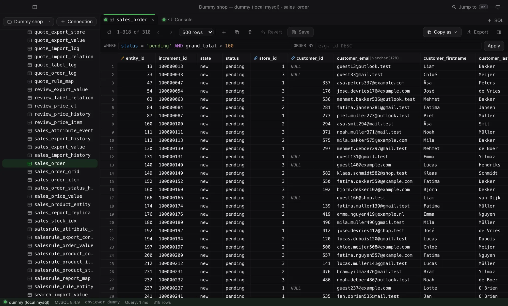
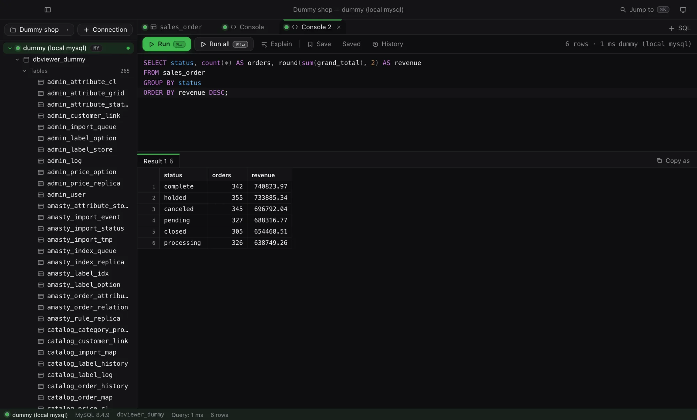
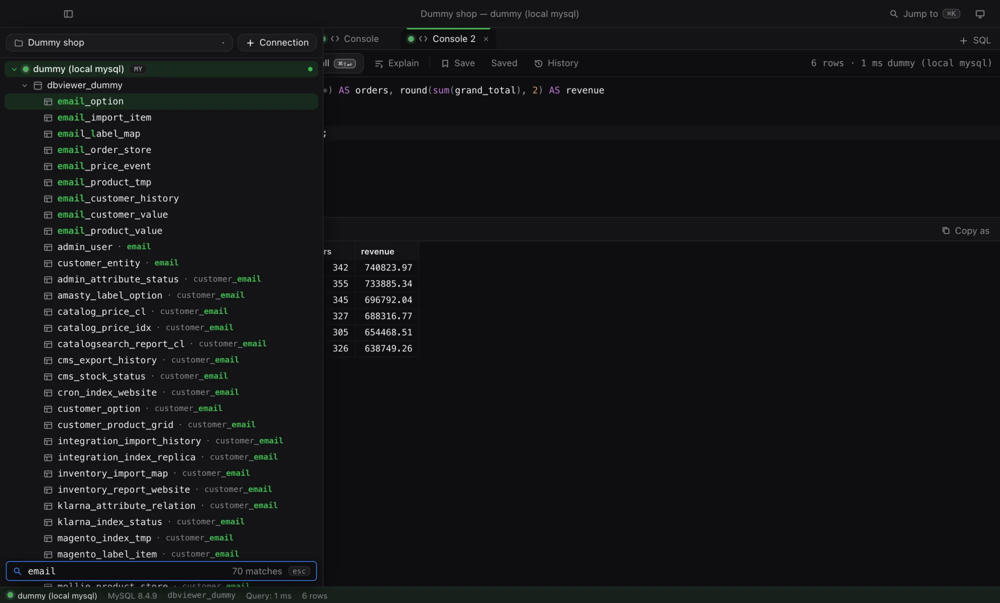
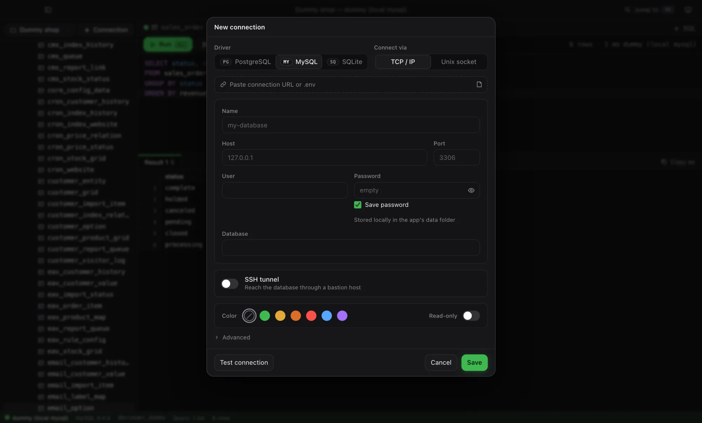
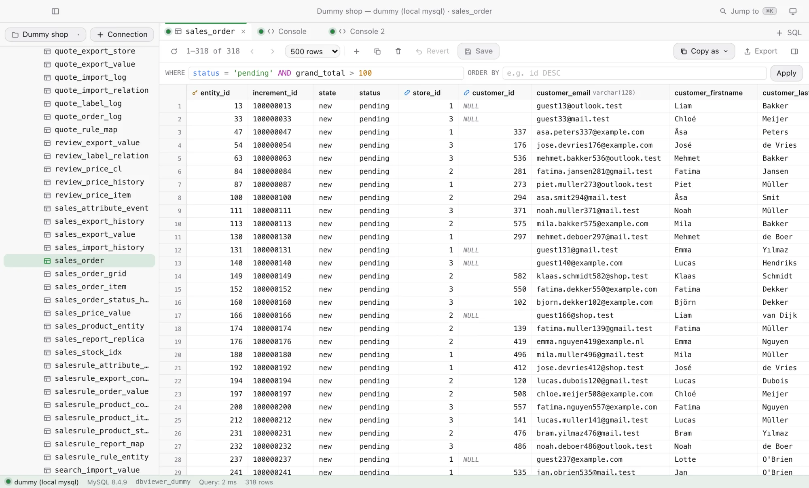

A fast desktop client for PostgreSQL, MySQL and SQLite. Browse, filter and edit tables, run queries, and keep production safe with read-only connections.
macOS, Windows and Linux · All releases

Built for people who live in their database: keyboard-first, fast on schemas with hundreds of tables, and careful with your data.
Edit cells inline, add or delete rows, paste from a spreadsheet. Nothing is written until you hit Save, and then it all runs in one transaction.
Mark a connection read-only and it's enforced by the UI, the backend and the database session itself. Give production a red tab so you always know where you are.
Focus the sidebar and start typing. It matches table names and column names, so email finds every table that stores one.
Schema-aware autocomplete, dialect highlighting, multiple result tabs, history and saved queries. ⌘ Enter runs the statement under the cursor.
⌘-click a foreign key value to jump to the row it points to. Mouse back and forward buttons take you back again.
Copy a selection as TSV, CSV, JSON, SQL INSERT or Markdown. Export whole tables or query results to a file.
Tables, columns and aliases complete as you type. Tab accepts a suggestion. Results open in their own tabs so you can compare runs side by side.

The sidebar filters as you type, across tables and their columns. ⌘ K jumps to any table in the project, and WHERE and ORDER BY take plain SQL with highlighting and completion.

Paste a connection URL or a Laravel .env and the form fills itself. Group connections into projects and give each one a color.
~/.ssh keys and config
Follows your system by default.

Free, open source, no account needed.
Also available: Windows portable · Linux .tar.gz · build from source
The builds aren't signed yet. On macOS, move the app to Applications and run xattr -dr com.apple.quarantine "/Applications/DB Viewer.app" once. On Windows, choose “More info → Run anyway” in SmartScreen. Linux needs GTK 4 and WebKitGTK 6.